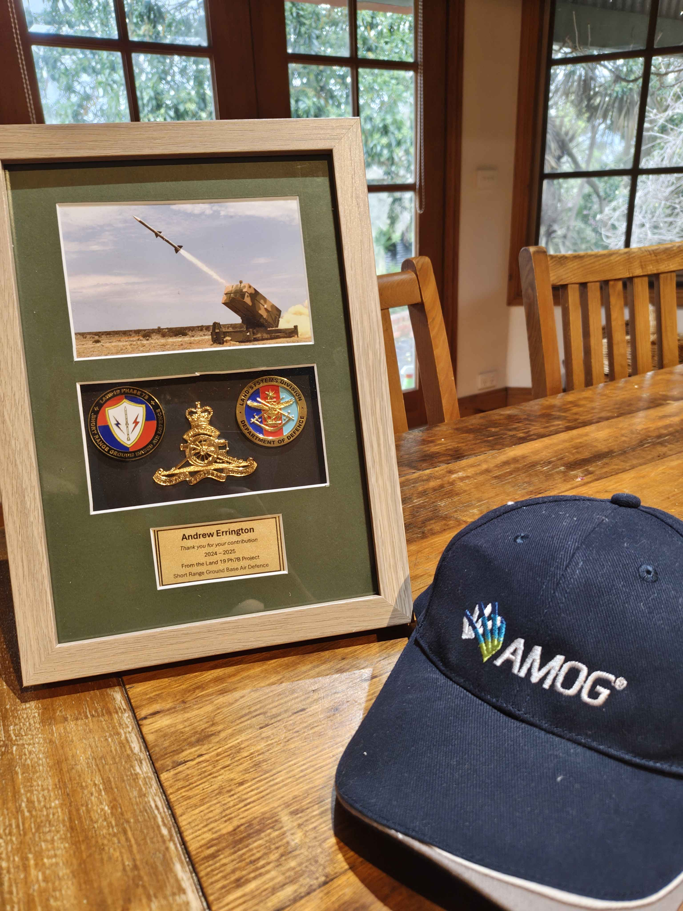
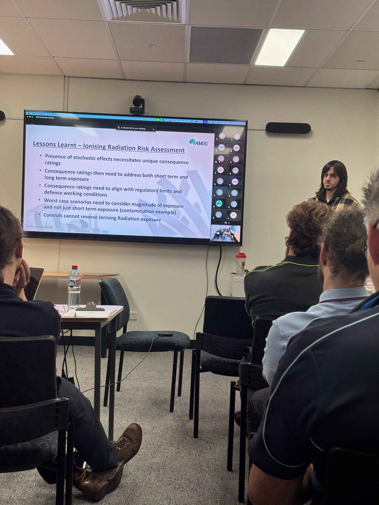

PROJECT MODULE 02
Internships - Systems and Safety
Worked full time within the Land 19 7B team with Defence and also the systems and safety team with AMOG Consulting
Defence and AMOG Consulting · Student Engineer Intern· 15 months total full time
Internship overview
Worked full time in Defence assisting the Land 19 7B project and primarily assisted with product manufacturing and system verification. Also worked at AMOG Consulting for 3 months full time primarily working on developing a full risk assessment report on ionising radiation for the AUKUS submarines and heavily researching the topic to determine consequences and likelihood of radiation exposure
Systems experience (Defence)
Defence - Systems Engineering Intern - 03/2024 to 03/2025 Full time
- Assisted supervising engineer on preparing certification reports on system capabilities
- Organized and witnessed dust and rain ingress trials for circuit breakers
- Main lead on initiating, trialing and delivering wing and fin covers with Plastic Solutions Australia for Regiment 16 end users
- Developed mission database and presented to project leaders across CASG
- Began and investigated laptop charging solution for deployed systems
- Assisted other project leads on their requirements with IBM DOORS
Safety experience (AMOG)
AMOG Consulting - Systems and Safety Vacation Student Engineer - 10/2025 to 02/2026 Full time
- Assisted system and safety team with small jobs; proofreading risk assessments and assisting with hazard log spreadsheet
- Solo project: Created a hypothetical risk assessment report for the upcoming AUKUS Nuclear Submarines with a new risk matrix accounting for unique hazards present with ionizing radiation and exploring every possible hazard onboard and evaluating their potential controls
- Presented project with key justifications and research findings to entire Melbourne office with online audience watching from Perth office
- Created a nuclear training course for the rest of the safety team to cover all that I had learnt whilst researching for my solo project
Key takeaways
Greatly improved my communication and presentation skills and gained practical experience in systems and safety that gives me a unique perspective and approach to solving engineering problems



